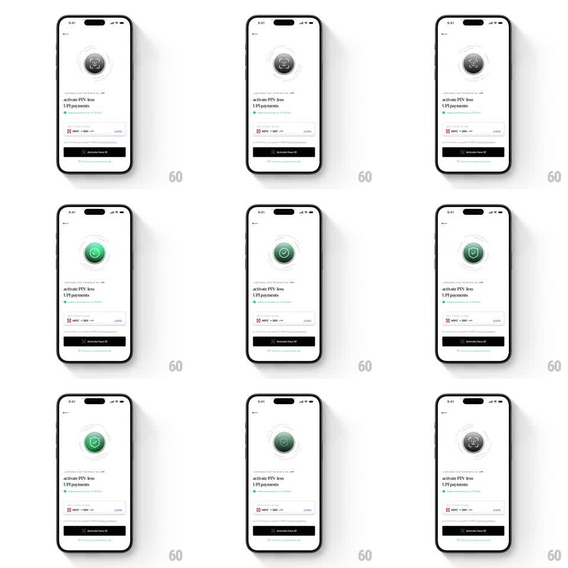

Media
Frame-by-frame

Rebuild this animation 1:1: CRED's Face ID activation - concentric ripple rings pulse around the Face ID glyph, and on activation the glyph flips to a green check as the rings flush green, then settles into a shield.

Rebuild this animation 1:1: CRED's Face ID activation - concentric ripple rings pulse around the Face ID glyph, and on activation the glyph flips to a green check as the rings flush green, then settles into a shield. ## Integration Integration: stack-agnostic spec - springs given as stiffness/damping, timed motions as duration + curve; map every value to your framework and animation library of choice. ## Scene CRED light screen: back arrow, the glyph medallion top-center (Face ID face in a dark circle wrapped by 3 concentric thin rings), "activate PIN less UPI payments" headline, an HDFC bank account row, a black "Activate Face ID" button, and a skip link. ## Motion spec Pattern: concentric ripple rings around a state-flipping medallion. - Idle: the rings ripple outward from the medallion (each ring scales 1 -> 1.15 fading 0.8 -> 0, 1.8s, staggered 600ms, looping) - a sonar pulse. - On activate: the pulse accelerates (one fast ripple, 600ms), the dark medallion flips to green with a white check (scale 0.85 -> 1.05 -> 1, spring ~380/15), and the rings flush green one by one, innermost first (120ms stagger). - A beat later the check morphs into a shield-with-check (path morph, 300ms, ease-in-out) - protected, not just verified. - The button's label rolls to its success copy (vertical roll, 200ms) as the medallion settles. ## Calibration - Green arrives exactly once, at the flip - idle rings stay neutral grey. - The medallion is the only filled disc; rings stay hairlines. ## Reduced motion Medallion crossfades to the green check (250ms); rings hold static. ## Don't miss - Ripples originate behind the medallion and are clipped by nothing - they expand over the white background. - The shield morph keeps the check's stroke continuous - the check never disappears mid-morph.